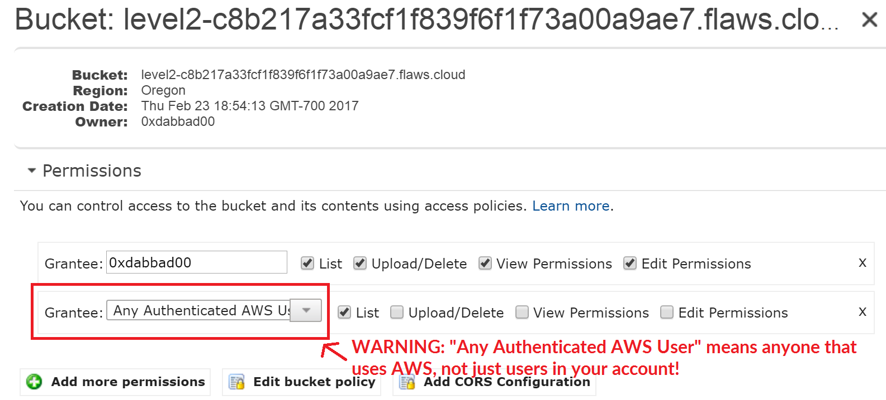

Similar to opening permissions to "Everyone", people accidentally open permissions to "Any Authenticated AWS User". They might mistakenly think this will only be users of their account, when in fact it means anyone that has an AWS account.
Examples of this problem
Open permissions for authenticated AWS user on Shopify (link)
Avoiding the mistake
Only open permissions to specific AWS users.

Level 3
The next level is fairly similar, with a slight twist. Time to find your first AWS key! I bet you'll find something that will let you list what other buckets are.